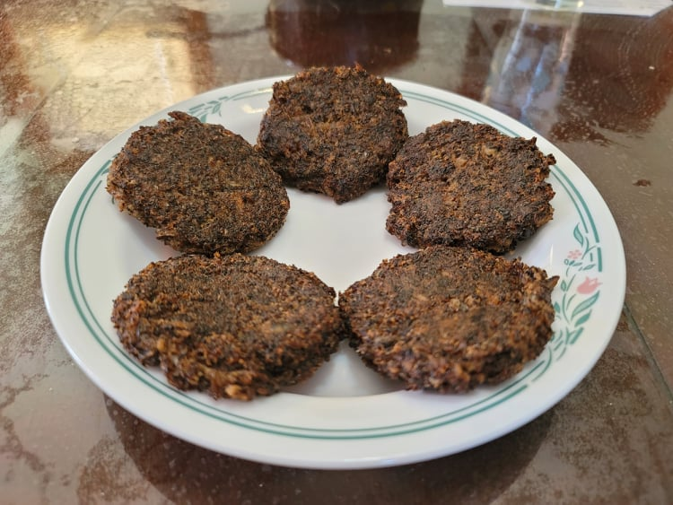

Wild Rice Cakes

Ingredients:
- 2 cups Cooked wild rice, divided
- 3 cups Water
- 1/8 tsp Salt, or to taste
- 1/8 tsp Maple sugar, or to taste
- 3 - 4 tbsp Sunflower oil, or as needed
Instructions:
- Place 1 1/2 cups wild rice into a saucepan with the water. Bring to a boil and then reduce to a simmer. Let simmer until the water is evaporated completely.
- Place the overcooked rice into a food processor and blend until it becomes a fine paste.
- Stir in the salt, sugar, and the rest of the wild rice into the paste. Form the paste into 1/4 cup patties about a 1/2 inch thick, about 6 patties.
- Heat oil in a pan over medium heat. Place the patties and let cook for about 5 - 8 minutes on each side, or until nicely browned.